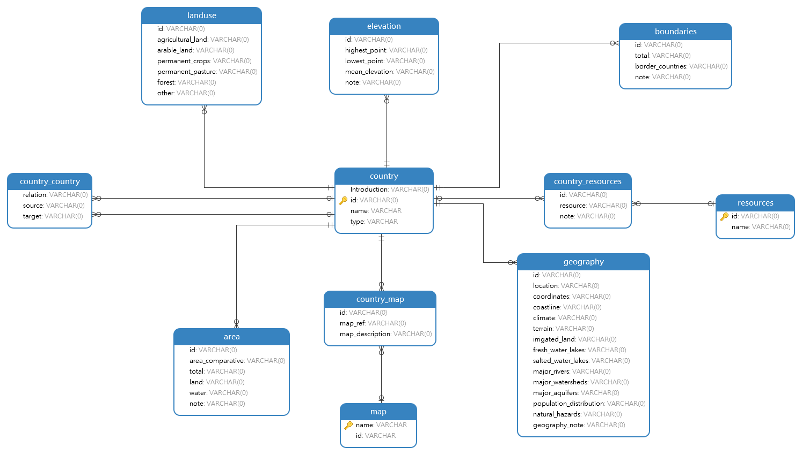
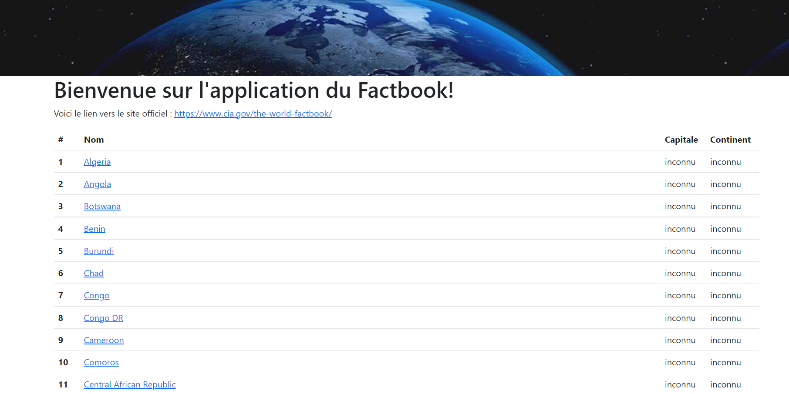

Dans le cadre de ce cours, nous utiliserons une base SQLite plutôt qu'un serveur MySQL ou PostGreSQL. Il est nécessaire d'avoir SQLite3 installé sur son poste:
sudo apt-get install sqlite3sqlite3.exebrew install sqlite3Avec Python, l'ORM le plus utilisé est SQLAlchemy. Un ORM (Object Relational Mapping) est un ensemble de librairies qui permet, grâce à un langage de programmation (Python dans notre cas), d'interagir facilement avec les données grâce à des objets: l'ORM est une couche d'abstraction entre le code et les données. L'ORM, nous le verrons, apporte de nombreux avantages au développeur, mais aussi des inconvénients et certaines limites.
L'avantage certain de l'ORM est la réduction (parfois considérable) du nombre de lignes de code SQL à écrire. L'ORM peut aussi rendre la requête plus lisible, puisqu'elle tient généralement en une seule ligne de code. Modifier de moteur SQL est aussi très simple, l'ORM se chargera d'écrire la rtequête SQL comme il convient (par exemple, si la base est OracleSQL, un rownum sera utilisé là où les autres SGBD utilisent limit). Enfin, un autre avantage certain est que l'utilisation d'un ORM permet une varaibilisation plus facile du code: en cas de changeemnt de nom de table ou de champ, il est facile de changer une variable dans le code Python, plutôt que de modifier toutes les requêtes SQL concernées.
En revanche, dès lors que le modèle de données devient complexe, et que les opérations à effectuer sur les données dépassent le simple select ou delete sur une ligne particulière, l'ORM montre ses limites. Par exemple, effectuer de nombreuses jointures avec un ORM est extrêmement complexe à écrire (et long à exécuter finalement sur la base); alors qu'écrire directement la requête et l'intégrer dans le code est plus facile et plus rapide.
Si SQLAlchemy est très répandu avec Python, ce n'est pas le cas de tous les ORM. Attention donc aux ORM choisis, un changement de version peut casser tout notre code, alors que le SQL est stable et qu'une requête écrite en dure pourrait toujours s'exécuter.
Flask-SQLAlchemy est l'adaptation pour Flask de SQLAlchemy. SQLAlchemy est requis pour permettre à FLask-SQLAlchemy de fonctionner, mais il est importé directement en effectuant la commande suivante dans l'environnement virtuel:
pip install flask_sqlalchemy
Collecting flask_sqlalchemy
Downloading Flask_SQLAlchemy-3.0.2-py3-none-any.whl (24 kB)
Requirement already satisfied: Flask>=2.2 in c:\users\maxim\documents\formations\tnah\python_flask\coursm2tnah_flask_code\env\lib\site-packages (from flask_sqlalchemy) (2.2.2)
Collecting SQLAlchemy>=1.4.18
Downloading SQLAlchemy-1.4.44-cp311-cp311-win_amd64.whl (1.6 MB)
---------------------------------------- 1.6/1.6 MB 2.3 MB/s eta 0:00:00
Requirement already satisfied: Werkzeug>=2.2.2 in c:\users\maxim\documents\formations\tnah\python_flask\coursm2tnah_flask_code\env\lib\site-packages (from Flask>=2.2->flask_sqlalchemy) (2.2.2)
Requirement already satisfied: Jinja2>=3.0 in c:\users\maxim\documents\formations\tnah\python_flask\coursm2tnah_flask_code\env\lib\site-packages (from Flask>=2.2->flask_sqlalchemy) (3.1.2)
Requirement already satisfied: itsdangerous>=2.0 in c:\users\maxim\documents\formations\tnah\python_flask\coursm2tnah_flask_code\env\lib\site-packages (from Flask>=2.2->flask_sqlalchemy) (2.1.2)
Requirement already satisfied: click>=8.0 in c:\users\maxim\documents\formations\tnah\python_flask\coursm2tnah_flask_code\env\lib\site-packages (from Flask>=2.2->flask_sqlalchemy) (8.1.3)
Collecting greenlet!=0.4.17
Downloading greenlet-2.0.1-cp311-cp311-win_amd64.whl (191 kB)
-------------------------------------- 191.2/191.2 kB 5.8 MB/s eta 0:00:00
Requirement already satisfied: colorama in c:\users\maxim\documents\formations\tnah\python_flask\coursm2tnah_flask_code\env\lib\site-packages (from click>=8.0->Flask>=2.2->flask_sqlalchemy) (0.4.6)
Requirement already satisfied: MarkupSafe>=2.0 in c:\users\maxim\documents\formations\tnah\python_flask\coursm2tnah_flask_code\env\lib\site-packages (from Jinja2>=3.0->Flask>=2.2->flask_sqlalchemy) (2.1.1)
Installing collected packages: greenlet, SQLAlchemy, flask_sqlalchemy
Successfully installed SQLAlchemy-1.4.44 flask_sqlalchemy-3.0.2 greenlet-2.0.1
La connection de Flask-SQLAlchemy à l'application Flask est très simple:
#app.py
...
from flask_sqlalchemy import SQLAlchemy
...
# app.config['SQLALCHEMY_DATABASE_URI'] = Config().SQLALCHEMY_DATABASE_URI
db = SQLAlchemy(app)
...
from .routes import generales
Comme nous pouvons le remarquer, il est nécessaire de créer une nouvelle variable de contexte dans la classe Config(), sans oublier de l'ajouter dans le fichier .env.
Quelques remarques sur la valeur à donner à cette variable de contexte SQLALCHEMY_DATABASE_URI:
[DB_TYPE]+[DB_CONNECTOR]://[USERNAME]:[PASSWORD]@[HOST]:[PORT]/[DB_NAME]: c'est valable pour tous les serveurs de bases de données relationnellessqlite:///chemin/vers/fichiersqlite:////chemin/vers/fichiersqlite:///chemin\\vers\\fichierCommentons le code de app.py:
app.py afin d'instancier SQLAlchemy()app.config car nous avons mis plus haut qu'il fallait configurer app avec Config(): l'ajout de SQLALCHEMY_DATABASE_URI dans la classe Config() est suffisantdb est la variable d'instanciation de SQLAlchemy avec notre instance de Flask nommée appfrom ..app import db : nous verrons par la suite comment utiliser cette instance de SQLAlchemyCode concerné: Seance3/flask_sqlalchemy
Le modèle de données physique de notre base de données sur le Factbook est le suivant: 
SQLalchemy permet d'effectuer des requêtes SQL sans utiliser les possibilités de l'ORM. Pour cela, on insère la requête dans le code suivant; pour les besoins de l'exercice nous jouerons une requête sur une table puis nous afficherons les résultats avec un print():
#generales.py /pays
print(db.session.execute("SELECT * FROM country LIMIT 2").fetchall())
Quelques commentaires:
db est l'instance de la base de données créée dans app.py plus hautfetchall() permet de retourner les valeurs sous forme d'une liste de tuples; sans cela, les données ne sont pas lisibles en sortie de base avec SQLAlchemy (la sortie est en réalité un objet ResultProxy)Le résultat de ce code doit être le suivant
[("<p>Algeria has known many empires and dynasties starting with the ancient Numidians (3rd century B.C.), Phoenicians, Carthaginians, Romans, Vandals, ... (
2790 characters truncated) ... arbon revenues to fund the government and finance the large subsidies for the population has fallen under stress because of dec
lining oil prices.</p>", 'ag', 'Algeria', 'sovereign'), ("From the late 14th to the mid 19th century a Kingdom of Kongo stretched across central Africa from p
resent-day northern Angola into the current Congo ... (1141 characters truncated) ... He pushed through a new constitution in 2010. Joao LOURENCO was elected
president in August 2017 and became president of the MPLA in September 2018.", 'ao', 'Angola', 'sovereign')]
127.0.0.1 - - [27/Nov/2022 17:18:40] "GET /pays HTTP/1.1" 200 -
Si un résultat similaire est obtenu, alors la base de données est correctement branchée; dans le cas contraire, vérifier le chemin donné en variable SQLALCHEMY_DATABASE_URI.
Code concerné: Seance3/premiere_requete
Plutôt que d'effectuer des requêtes SQL à la main, l'ORM propose de les générer à notre place. Pour cela, il est nécessaire d'indiquer à l'ORM une représentation de nos données. Les données conservées en base sont alors représentées en une collection d'objets (de classes), ce qui est nommé modèles de base de données. La couche ORM va alors effectuer le mapping modèle>table elle-même.
Chaque table est représentée par un modèle, qui est lui-même une classe Python dérivée de SQLAlchemy(app).Model qui porte le même nom que la table (l'ORM est insensible à la casse pour le nom de table; par convention, il est préférable de nommer chaque classe en camelCase). Les modèles sont stockés dans un au plusieurs fichiers Python dans le module models.
# models/factbook.py
from ..app import app, db
class Country(db.Model):
...
La déclaration des champs d'une table se fait sous la forme suivante : nom = db.Colmun(type de colonne, paramètres supplémentaires). Il est important d'indiquer le type du champ, la documentation de SQLAlchemy propose les suivants:
# models/factbook.py
from ..app import app, db
class Country(db.Model):
id = db.Column(db.String(10))
Introduction = db.Column(db.Text)
name = db.Column(db.String(500))
type = db.Column(db.String(100))
Note: dans le jeu d'exemple du Factbook, les données sont sales; ainsi, les champs Integer n'ont pas pu être initilisés en base et se retrouvent en base. Avec un véritable jeu de données, il convient évidemment de typer correctement les colonnes des tables, et par conséquent les objets des modèles.
Note 2: dans le code lié à cette partie du cours, seuls les modèles des tables qui ne sont pas des tables de relations many-to-many sont converties en modèles. Voir la partie suivante pour les jointures.
Code concerné: Seance3/modeles ; ce code n'est pas fonctionnel car les contraintes déclarées en base de données ne sont pas déclarées dans nos modèles
SQLAlchemy permet de déclarer les contraintes présentes dans la base de données. Ainsi, le modèle prend en charge les contraintes en amont de la transaction relationnelle: ce sera alors SQLAlchemy qui remontera une erreur, au lieu de la base de données. Cette partie va aborder les contraintes SQLAlchemy, à l'exception des clés étrangères (abordées dans la partie sur les relations entre modèles (les jointures)).
primary_key = True dans la déclaration du modèle# models/factbook.py
class Country(db.Model):
id = db.Column(db.String(10), primary_key=True)
Introduction = db.Column(db.Text)
name = db.Column(db.String(500))
type = db.Column(db.String(100))
unique=True existe# models/factbook.py
class Country(db.Model):
id = db.Column(db.String(10), primary_key=True)
Introduction = db.Column(db.Text)
name = db.Column(db.String(500), unique=True)
type = db.Column(db.String(100))
NOT NULL SQL est transposée dans SQLAlchemy par nullable=False ou nullable=True# models/factbook.py
class Country(db.Model):
id = db.Column(db.String(10), primary_key=True)
Introduction = db.Column(db.Text)
name = db.Column(db.String(500), unique=True, nullable=False)
type = db.Column(db.String(100))
En plus de déclarer les champs de chaque table, il est possible d'apporter plus de précisions dans les modèles concernant la table elle-même:
__tablename__: il permet d'indiquer le nom de la table dans la base de données; ainsi, si le nom de la table change, il ne sera pas nécessaire de changer le nom de la classe (ce qui nécessiterait de modifier tous les appels à cette classe dans le code de l'application)__tablename__ pour l'affichage du nom de la table: l'attribut __table__:# routes/generales.py pays
...
from ..models.Country import Country
...
print(Country.__table__)
...
__table_args__ qui prend un dictionnaire comme valeur:
__table_args__ = {"mysql_engine": "TokuDB"}__table_args__ = {"schema": "nom_du_schema"}Enfin, certaines méthodes des classes représentant nos tables sont communes dans Flask-SQLAlchemy. C'est le cas de __repr__(self). Elle permet d'indiquer la forme dans laquelle retourner les objets de la classe. Cette méthode est très utile pour le débuggage.
# models/factbook.py
class Country(db.Model):
__tablename__ = "country"
id = db.Column(db.String(10), primary_key=True)
Introduction = db.Column(db.Text)
name = db.Column(db.String(500), unique=True, nullable=False)
type = db.Column(db.String(100))
def __repr__(self):
return '<Country %r>' % (self.name)
Code concerné: Seance3/contraintes ; ce code n'est pas fonctionnel (pour le faire fonctionner, supprimer toutes les classes sauf Country())
Maintenant que notre base de données est branchée à l'application, et que les modèles sont créés, nous pouvons afficher les données de la table country dans la page /pays. Pour cela, il faut:
donnees de la route /paysdonnees est correctement formatté
#routes/generales.py
...
@app.route("/pays")
def pays():
donnees = []
for country in Country.query.all():
donnees.append({
"nom": country.name,
"capitale":"inconnu",
"continent":"inconnu"
})
return render_template("pages/tous_pays.html", donnees=donnees, sous_titre="Tous les pays")
Commentaires:
donnees en liste vide afin de servir de réceptable aux objets qui y seront insérésCountry.query.all() est notre première requête via l'ORM:
Country est le nom de la classe dans le modèle (dans notre cas, c'est également le nom de la table)query.all() est l'équivalent de SELECT * FROM country sans aucune condition dans la requête: tous les pays sont donc remontés__repr__ (voir Quelques attributs et méthodes de classes utiles) : [<Country 'Algeria'>, <Country 'Angola'>,...]nameNB: pour les besoins de cet exemple, toutes les classes autres que Country() ont été supprimées du modèle
Code concerné: Seance3/requete_orm
Il existe deux grands types de relations entre tables de la base de données:
Ces deux types de relations sont pris en charge simplement par SQLALchemy.
Partons de la relation entre la table country et la table area et supposons qu'il est possible pour un pays d'avoir plusieurs aires. Alors il nous faut lier ces deux tables dans la base relationnelle (par une clé étrangère posée dans area) et donc les deux classes Country() et Area(). Pour ce faire, SQLAlchemy offre plusieurs fonctions et propriétés qui permettent de le déclarer.
Théoriquement, la syntaxe pour lier deux tables est la suivante :
class A(db.Model):
cle_primaire = db.Column(db.String(100), primary_key=True)
un_champ_de_la_table = db.Column(db.String(100))
propriete_de_relation = db.relationship(
"classe_liee",
backref="classes_liees",
lazy="dynamic
)
class classe_liee(db.Model):
un_champ_de_la_table = db.Column(db.String(100))
a_id = db.Column(db.String(100), db.ForeignKey('a.cle_primaire'))
Commentaires:
db.relationship(nom_de_la_classe_liee, args) permet de construire des relations directes entre les objets afin de naviguer facilement entre eux. Ainsi, plutôt que de donner l'identifiant de l'objet référencé par la clé, on donnera l'objet lui-même dans SQLAlchemy (cf.: prochain cours).backref est un argument qui définit un champ qui sera ajouté aux objets de la classe 'many' et qui pointera en retour sur l'objet 'one'. Ici, cela veut dire que l'on peut utiliser classe_liee.classes_liees pour avoir l'instance A liée.lazy détermine comment les objets liés sont requêtésA.propriete_de_relation n'est pas un champ physique de la table de la base de données, mais simplement une propriété Python nécessaire à l'établissement de la relation entre deux classes; si l'on appele A.propriete_de_relation, SQLAlchemy retournera l'ensemble des objets liés à l'objet Aclasse_liee(), a_id est le champ physique de la table, qui est une clé étrangère pointant vers A.cle_primaire: le lien vers cette clé primaire se fait avec db.ForeignKey('a.cle_primaire')Reprenons l'exemple de country et area, les classes deviennent alors:
#models.factbook.py
...
class Country(db.Model):
__tablename__ = "country"
id = db.Column(db.String(10), primary_key=True)
...
# propriétés de relation
areas = db.relationship(
'Area',
backref='areas',
lazy=True
)
def __repr__(self):
return '<Country %r>' % (self.name)
class Area(db.Model):
__tablename__ = "area"
...
total = db.Column(db.String(100), primary_key=True)
...
# clés étrangères
id = db.Column(
db.String(100),
db.ForeignKey('country.id')
)
def __repr__(self):
return '<Area %r>' % (self.total)
Vérifions maintenant que la relation est correctement établie et remonte les objets Area lorsque l'on demande les pays:
# routes/generales.py /pays
for country in Country.query.all():
...
print(country.areas)
return ...
Commentaires:
areas est ici l'équivalent de propriete_de_relation, c'est une colonne qui n'existe pas en base, mais qui est spécifique à l'application Pythonprint() affiche, pour chaque pays, une liste d'objets Area formattés selon la fonction de représentation __repr__ définie dans la classe Area:...
[<Area '510.072 million sq km'>]
...
Code concerné: Seance3/one_to_many
Dans une relation many-to-many, une table de relation s'intercale entre les deux tables principales de la relation. Cette table de relation est physiquement présente dans la base de données, et doit être déclarée dans les classes du modèle. C'est le cas pour les relations des pays vers les map et les resources, mais aussi pour la relation country_country.
Reprenons la syntaxe d'un point de vue théorique:
table_de_relation_a_vers_b = db.Table(
"table_de_relation_a_vers_b",
db.Column('a_id', db.String(100), db.ForeignKey('a.id'), primary_key=True),
db.Column('b_id', db.String(100), db.ForeignKey('b.id'), primary_key=True)
)
class A(db.Model):
id = db.Column(db.String(100), primary_key=True)
un_champ_de_la_table = db.Column(db.String(100))
bs = db.relationship(
'B',
secondary=table_de_relation_a_vers_b,
backref="bs"
)
class B(db.Model):
id = db.Column(db.String(100), primary_key=True)
un_champ_de_la_table = db.Column(db.String(100))
Commentaires:
db.Table() prend les arguments suivants:
db.relationship() de la même manière que pour une relation one-to-many, à une différence prêt: secondary. Il faut ici indiquer le nom de la variable créée en début de modèle et qui comprend la table de relationA se fera comme pour one-to-many: A.bsReprenons à nouveau un exemple dans le Factbook avec la relation entre country et map:
#models/factbook.py
country_map = db.Table(
"country_map",
db.Column('id', db.String(100), db.ForeignKey('country.id'), primary_key=True),
db.Column('map_ref', db.String(100), db.ForeignKey('map.name'), primary_key=True)
)
class Country(db.Model):
__tablename__ = "country"
id = db.Column(db.String(10), primary_key=True)
...
# propriétés de relation
...
maps = db.relationship(
'Map',
secondary=country_map,
backref="maps"
)
...
class Map(db.Model):
__tablename__ = "map"
...
name = db.Column(db.Text, primary_key=True)
...
Pour obtenir tous les noms de la première map liée à chaque pays, il suffit de jouer:
# routes/generales.py /pays
for country in Country.query.all():
...
print(country.maps[0].name)
return ...
...
Asia
Political Map of the World
Asia
Asia
Asia
Physical Map of the World
...
Code concerné: Seance3/many_to_many